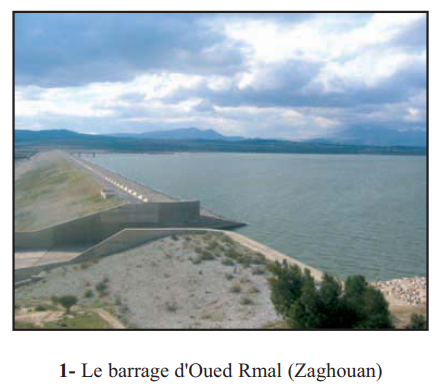
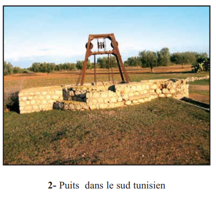
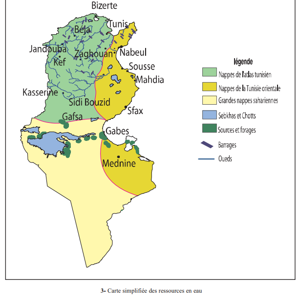
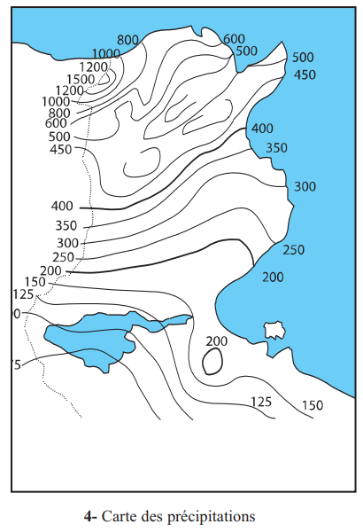
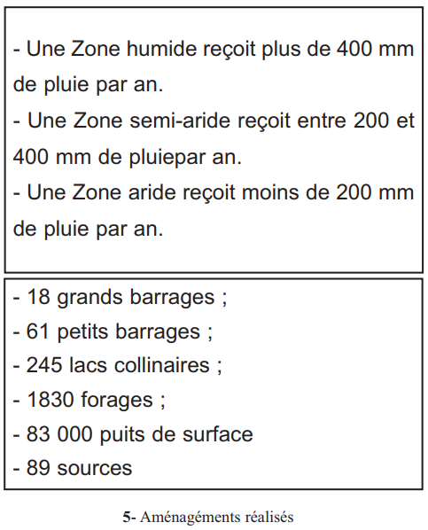
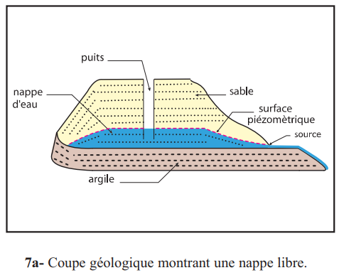
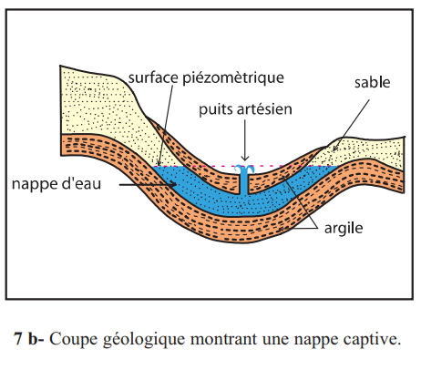
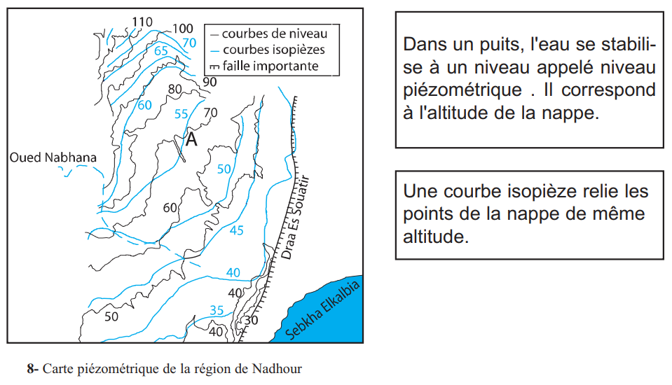
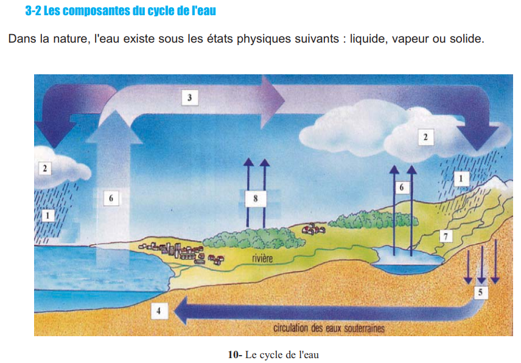

INGÉNIEUR Mohamed CHAGRAOUI
ENSEIGNANT SVT · CANDIDAT CAPES SVT 2026 · TUNISIE
Sciences de la Vie et de la Terre
🎯 Pourquoi ce chapitre ? — Objectifs du programme
Selon le programme officiel tunisien (Thème 1 — Exploitation rationnelle des ressources géologiques), ce chapitre vise à :
Reconnaître les différentes ressources en eau (eaux de surface et eaux souterraines).
Expliquer la formation et le renouvellement des nappes aquifères (nappe libre, nappe captive).
Exploiter une carte hydrologique pour déterminer la profondeur des nappes et le sens d'écoulement.
Prendre conscience de la nécessité de préserver les ressources en eau et de les exploiter rationnellement.
🔗 Ce chapitre combine la géologie (Ch.3 — nature des roches perméables/imperméables) avec l'hydrologie. La carte hydrologique est directement dérivée de la carte géologique. Les données tunisiennes sont essentielles pour le concours.
📚 Préacquis
Ch.3 — La carte géologique permet d'identifier les roches perméables et imperméables → localisation des nappes
Ch.2 — Les failles et les fractures créent des chemins préférentiels pour les eaux souterraines
L'eau douce représente 3% des ressources totales en eau de la Terre
Les régions arides et semi-arides disposent seulement de 2% des eaux douces disponibles
En Tunisie : 3/4 du territoire sont semi-arides et arides → pression sur les ressources en eau

Doc. 1 p.37 — Le barrage d'Oued Rmal (Zaghouan)

Doc. 2 p.37 — Puits dans le sud tunisien
❓ 3 Questions directrices
Comment les eaux sont-elles réparties en Tunisie ?
Quelles sont les caractéristiques des réserves d'eau souterraine ?
Comment protéger et gérer rationnellement les ressources en eau ?
🧠 Comprendre avant de mémoriser
Ce chapitre répond à une question vitale pour la Tunisie : où est l'eau et comment la gérer ? Il combine la géologie (Ch.3 — nature des roches perméables/imperméables) avec l'hydrologie (étude des eaux). La carte hydrologique est directement dérivée de la carte géologique.
Clique sur chaque notion pour explorer · Les pièges et connexions avec le manuel sont révélés
💧
Répartition en Tunisie
Données réelles — Nord/Centre/Sud
🌊
Nappes libre vs captive
Formation et caractéristiques
🗺️
Carte hydrologique
Courbes isopièzes + profondeur
⚠️
3 Pièges classiques
Erreurs fréquentes à éviter
🔗
Liens avec le manuel
Ch.2 + Ch.3 + géologie tunisienne
💧 Répartition des ressources en eau en Tunisie
La Tunisie dispose de 4 700 millions de m³/an de ressources potentielles, dont 2 700 Mm³ d'eaux de surface et 2 000 Mm³ d'eaux souterraines. Mais ces ressources sont inégalement réparties selon les zones climatiques.
Type d'eau
Nord (%)
Centre (%)
Sud (%)
Total (Mm³/an)
Eaux de surface
81%
12%
7%
2 700
Nappes de surface
55%
31%
14%
719
Nappes profondes
17%
24%
58%
1 250
💡 Paradoxe Nord/Sud tunisien
Le Nord reçoit plus de pluie → 81% des eaux de surface mais seulement 17% des nappes profondes. Le Sud est aride → peu d'eaux de surface mais 58% des nappes profondes (nappes fossiles non renouvelables formées il y a des millénaires). Conséquence : le Sud exploite des réserves non renouvelables → risque d'épuisement à long terme.
🌊 Nappe libre vs Nappe captive — la différence fondamentale
Nappe libre (phréatique)
Superficielle (< 50 m)
Alimentée par la pluie sur toute sa surface
Pas de couche imperméable au-dessus
Puits ordinaire pour l'atteindre
Vulnérable à la pollution
Nappe captive (artésienne)
Profonde (> 50 m)
Entre deux couches imperméables
Eau sous pression
Puits artésien → eau jaillit seule
Mieux protégée de la pollution
💡 Pourquoi l'eau jaillit dans un puits artésien ?
La nappe captive est emprisonnée entre deux couches imperméables. L'eau est sous pression car la zone d'alimentation (où la pluie entre dans la nappe) est à une altitude supérieure. Quand on perce la couche supérieure imperméable, la pression pousse l'eau vers le haut — comme un ballon qu'on perce.
🗺️ Carte hydrologique — lire et interpréter
La carte hydrologique (piézométrique) représente la nappe d'eau par des courbes isopièzes reliant les points de la nappe de même altitude.
Notion
Définition
Sur la carte
Courbe isopièze
Relie les points de la nappe de même altitude
Comme les courbes de niveau, mais pour la nappe
Surface piézométrique
Limite supérieure (toit) de la nappe
Représentée par les courbes isopièzes
Profondeur nappe
Altitude surface − Altitude nappe
Différence entre courbe de niveau et courbe isopièze
Source
Affleurement de la nappe en surface
Point où courbe isopièze = courbe de niveau
Sens écoulement
Perpendiculaire aux courbes isopièzes
Des valeurs élevées vers les valeurs basses
⚠️ 3 Pièges classiques
⚠️ Piège 1 — Nappe libre ≠ eau de bonne qualité, nappe captive ≠ eau pure ▼
La qualité de l'eau dépend de la roche aquifère traversée, pas de la profondeur. Une nappe captive dans du calcaire fissuré peut être dure. Dans le Sud tunisien, certaines nappes profondes ont une salinité de 23 à 26 g/L (Djerba).
Les nappes fossiles du Sud tunisien ne se renouvellent pas à l'échelle humaine (formées il y a 30 000 ans). Surexploitation → baisse du niveau → intrusion d'eau salée marine (Monastir : 15-25 g/L).
L'eau s'écoule des zones de haute pression vers les zones de basse pression. L'écoulement est perpendiculaire aux courbes isopièzes, des valeurs élevées vers les valeurs basses.
🔗 Connexions avec le manuel
← Chapitre 2 — Stratigraphie & Tectonique
Failles et perméabilité
Les failles normales créent des fractures → chemins préférentiels pour les eaux souterraines.
← Chapitre 3 — Carte Géologique
Carte hydrologique dérivée
La carte hydrologique est directement dérivée de la carte géologique. Roches perméables = aquifères.
L'eau est le facteur limitant principal des écosystèmes tunisiens (Thème 2).
💭 Questions de réflexion
1. En Tunisie, le Sud contient 58% des nappes profondes mais reçoit très peu de pluie. Ces nappes sont dites "fossiles". Que signifie ce terme et quelle conséquence cela a-t-il sur leur exploitation ?
Une nappe fossile est une nappe qui ne se renouvelle plus (ou très lentement) parce que les conditions climatiques qui l'ont alimentée n'existent plus. Formées il y a 30 000 ans. Chaque m³ pompé est perdu définitivement. Risque d'épuisement et d'intrusion d'eau salée.
2. Un géologue trouve que les courbes isopièzes indiquent des altitudes de 15, 10, 5 m de l'ouest vers l'est. Dans quelle direction coule la nappe ? Où cherchera-t-il une source ?
Écoulement perpendiculaire aux isopièzes, des valeurs élevées vers les basses → la nappe coule de l'ouest vers l'est. Une source se trouve là où une courbe isopièze croise une courbe de niveau de même valeur → profondeur = 0.
💧 Activité 1 — Les Ressources en Eau en Tunisie (p.38–39)

Doc. 3 p.38 — Carte simplifiée des ressources en eau

Doc. 4 p.39 — Carte des précipitations
Répartition régionale — Données réelles (p.39)
📊 Ressources potentielles totales : 4 700 Mm³/an
2 700
Mm³/an eaux de surface
2 000
Mm³/an eaux souterraines
2 500
Mm³/an eau exploitée

Doc. 5 p.39 — Aménagements réalisés
Région
Pluviométrie
Eaux de surface
Nappes profondes
Nord
> 400 mm/an (humide)
81%
17%
Centre
200–400 mm/an (semi-aride)
12%
24%
Sud
< 200 mm/an (aride)
7%
58%
💡 Aménagements réalisés en Tunisie (p.39)
18 grands barrages · 61 petits barrages · 245 lacs collinaires · 1 830 forages · 83 000 puits de surface · 89 sources. Le secteur agricole consomme 80% des ressources totales en eau.
Répartition régionale des eaux de surface et souterraines en Tunisie
✏️ Mini-quiz
1. Les eaux de surface sont surtout localisées dans le , car cette région reçoit .
2. Les nappes profondes sont surtout localisées dans le . Ces nappes sont en grande partie .
3. Le secteur qui consomme le plus d'eau en Tunisie est le secteur .
🌊 Activité 2 — Les Caractéristiques des Nappes d'Eau Souterraine (p.40)

Doc. 7a p.40 — Coupe d'une nappe libre

Doc. 7b p.40 — Coupe d'une nappe captive
Formation et types de nappes
Formation d'une nappe
Étape
Processus
1
Pluie tombe sur le sol
2
Une partie s'infiltre dans le sol et le sous-sol
3
L'eau percole à travers les roches perméables (roche aquifère)
4
L'eau est arrêtée par une roche imperméable = le mur (argiles, marnes)
5
Accumulation d'eau → formation d'une nappe
💡 Vitesse d'écoulement des nappes
L'eau des nappes n'est pas immobile — elle s'écoule très lentement : de 1 m/jour (sables perméables) à 1 m/an (calcaires peu fissurés). Ce déplacement très lent explique pourquoi une pollution de nappe est très difficile à nettoyer.
Nappe libre (phréatique) vs Nappe captive (artésienne)
Comparaison nappe libre / nappe captive
Caractéristique
Nappe libre (phréatique)
Nappe captive (artésienne)
Profondeur
< 50 m (superficielle)
> 50 m (profonde)
Couche supérieure
Pas de couche imperméable
Entre 2 couches imperméables
Alimentation
Sur toute sa surface (pluie)
Uniquement dans la zone d'affleurement de la roche aquifère
Pression de l'eau
Pression atmosphérique (faible)
Sous pression (élevée)
Type de puits
Puits ordinaire
Puits artésien (eau jaillit)
Vulnérabilité pollution
Très vulnérable
Mieux protégée
Qualité de l'eau
Dépend de la roche aquifère
Dépend de la roche aquifère
📌 Retenons (bilan p.46 + objectifs du programme)
Nappe libre (phréatique) :
nappe superficielle (< 50 m) sans couche imperméable au-dessus. Alimentée sur toute sa surface par la pluie. [Obj. : Expliquer la formation des nappes]
Nappe captive :
nappe profonde (> 50 m) entre deux couches imperméables. Eau sous pression. Peut donner un puits artésien.
Roche aquifère :
roche perméable contenant et transmettant l'eau (sables, calcaires fissurés). [Obj. : Reconnaître les ressources en eau]
Mur :
couche imperméable (argiles, marnes) arrêtant l'infiltration et formant le fond de la nappe.
Source :
affleurement naturel d'une nappe à la surface du sol.
✏️ Mini-quiz
1. Dans une nappe captive, l'eau jaillit à la surface d'un puits artésien car elle est .
2. La qualité de l'eau d'une nappe dépend principalement de .
3. Une source se forme quand .
🗺️ Activité 3 — La Carte Hydrologique (p.41–43)

Doc. 8 p.41 — Carte piézométrique de la région de Nadhour
1. Analyser une carte piézométrique
Élément
Signification
Courbe isopièze
Relie les points de la nappe de même altitude piézométrique
Niveau piézométrique
Altitude à laquelle l'eau se stabilise dans un puits
Point où courbe isopièze = courbe de niveau → profondeur = 0
Sens écoulement
Perpendiculaire aux isopièzes · des valeurs élevées → valeurs basses
💡 Exemple de calcul de profondeur
Au point A (carte de Nadhour p.41) : courbe de niveau = 20 m · courbe isopièze = 10 m → profondeur du puits = 20 - 10 = 10 m. Si courbe de niveau = 15 m et isopièze = 15 m → profondeur = 0 → source. Si courbe de niveau = 10 m et isopièze = 15 m → l'eau est sous pression → puits artésien possible.
Carte piézométrique simplifiée — courbes isopièzes + sens d'écoulement
✏️ Mini-quiz
1. En un point A où la courbe de niveau est à 30 m et la courbe isopièze à 18 m, la profondeur du puits est de .
2. Une source se trouve au point où .
3. Le sens d'écoulement d'une nappe est .
2. Le Cycle de l'Eau (p.42–43)

Doc. 10 p.43 — Le cycle de l'eau
Étape du cycle
Processus
Milieu
Évaporation
Eau liquide → vapeur (énergie solaire)
Océans, lacs, sols
Évapotranspiration
Transpiration des végétaux + évaporation
Continents
Condensation
Vapeur → gouttelettes → nuages
Atmosphère
Précipitations
Pluie, neige, grêle
Atmosphère → surface
Ruissellement
Eau coule en surface → cours d'eau, mer
Surface terrestre
Infiltration
Eau pénètre dans le sol → nappes
Sol et sous-sol
💡 Moteur du cycle : l'énergie solaire
Le moteur principal du cycle de l'eau est l'énergie solaire. C'est elle qui provoque l'évaporation des océans (90% de la vapeur d'eau atmosphérique vient des océans).
Le cycle de l'eau — les étapes clés
📌 Retenons (bilan p.46–47 + objectifs du programme)
Courbe isopièze :
relie les points de la nappe de même altitude piézométrique. [Obj. : Exploiter une carte hydrologique]
Surface piézométrique :
limite supérieure (toit) de la nappe.
Cycle de l'eau :
circulation de l'eau entre océans, continents et atmosphère, sous l'effet de l'énergie solaire. [Obj. : Expliquer le renouvellement des nappes]
✏️ Mini-quiz — Cycle de l'eau
1. Le moteur principal du cycle de l'eau est .
2. La partie des précipitations qui s'infiltre dans le sol contribue à , l'autre partie .
♻️ Activité 4 — La Gestion Rationnelle de l'Eau (p.44–45)
1. Les Facteurs menaçant les ressources en eau (p.44)
Perte de 34% de l'eau (SONEDE 1987) → réduit à 14% en 2000
Besoins croissants
Population : 3,7 M (1956) → 9,9 M (2004) · agriculture · tourisme
Demande > ressources disponibles
💡 Données réelles sur la salinisation des nappes tunisiennes
Nappes surexploitées → intrusion d'eau salée marine : Sousse et Hammamet : 6 à 8 g/L Monastir : 15 à 25 g/L Djerba : 23 à 26 g/L
Calcul de gaspillage — exercice p.44
Période
Calcul
Volume perdu
1 robinet fuit
1 goutte/sec = 0,05 mL/s
4 320 mL/jour = 4,32 L/jour
10 robinets
10 × 4,32 L/jour
43,2 L/jour
Par semaine
43,2 × 7
302,4 L
Par mois
43,2 × 30
1 296 L
Par an
43,2 × 365
15 768 L ≈ 15,8 m³
✏️ Mini-quiz — Menaces
1. La surexploitation des nappes côtières peut entraîner .
2. Le secteur qui consomme 80% des ressources en eau est le secteur . Cela implique que des économies d'eau en auraient le plus grand impact.
2. La Gestion Rationnelle de l'Eau (p.45)
Mesure
Objectif
Exemple tunisien
Nouveaux barrages
Augmenter le stock d'eaux de surface
Sédjnane, Barrak, Barbara (Nord)
Dessalement
Produire de l'eau douce à partir d'eau saumâtre
Stations de dessalement dans le Sud
Irrigation économique
Réduire la consommation agricole
Surfaces irriguées goutte à goutte : 56 000 ha (1988) → 245 000 ha (2001)
Eaux usées traitées
Réutiliser l'eau pour l'irrigation
6 603 ha de zones agricoles irriguées aux eaux usées traitées (2001)
Réduction fuites
Améliorer le rendement du réseau
SONEDE : pertes 34% (1987) → 14% (2000)
Évolution des surfaces irriguées avec techniques d'économie d'eau (×10³ ha)
📌 Retenons (bilan p.47 + objectifs du programme)
Gestion rationnelle de l'eau :
combinaison de mesures quantitatives (barrages, dessalement, économies) et qualitatives (lutte contre la pollution) pour préserver la ressource. [Obj. : Préserver les ressources en eau]
✏️ Mini-quiz — Gestion
1. Entre 1988 et 2001, les surfaces irriguées avec des techniques d'économie d'eau sont passées de . Cela montre que la Tunisie a .
2. Le dessalement des eaux saumâtres dans le Sud tunisien vise à .
📋 Bilan (p.46–47)
1Les ressources en eau sont en Tunisie. Les eaux de surface sont surtout dans le . Les nappes profondes sont surtout dans le Sud.
2Une nappe libre est . Une nappe captive est .
🔑 Formation d'une nappe
Eau de pluie → infiltration → percolation dans la roche aquifère → arrêtée par le mur imperméable (argiles, marnes) → accumulation = nappe. L'eau s'écoule lentement (1 m/jour à 1 m/an).
3Sur une carte hydrologique, les relient les points de la nappe de même altitude. La profondeur de la nappe = . Une source est localisée au point où .
4Le cycle de l'eau : évaporation → → précipitations → deux voies : . Le moteur est .
5L'eau est renouvelable mais . Les menaces : . Les solutions : barrages, .
🃏 Flashcards — Vocabulaire clé
✏️ QCM — Manuel (p.48) + Questions complémentaires
Vérification question par question. Cliquez sur "Vérifier" après chaque réponse. Les questions du manuel sont en cases à cocher (plusieurs réponses possibles).
Coupe géologique de la région de Sbeitla — deux nappes superposées A (superficielle) et B (profonde). Nappe A : roche poreuse, pas de couche imperméable au-dessus. Nappe B : entre deux couches d'argile imperméables.
Question
Nappe A
Nappe B
Type de nappe
Type de puits pour l'atteindre
Alimentation par les eaux de pluie
📐 Ex.2 — Calcul de profondeur de puits (exercice 2, p.51)
Carte hydrogéologique — courbes isopièzes et courbes de niveau. Calculer la profondeur de la nappe et identifier les sources.
Point
Altitude terrain (courbe de niveau)
Altitude nappe (courbe isopièze)
Profondeur du puits
Type
A
25 m
15 m
B
20 m
20 m
C
10 m
18 m
♻️ Ex.3 — Compléter le cycle de l'eau (exercice intégré p.42)
Compléter le texte en utilisant les mots : nappes, océans, précipitations, cours d'eau, lacs, nuages.
Sur Terre, l'eau est omniprésente, on la trouve en surface dans les , les et les . Cette eau s'évapore et forme dans l'atmosphère des qui, en se condensant, donnent des . Une partie de l'eau de pluie s'infiltre dans le sous-sol pour alimenter les , l'autre partie ruisselle pour former les eaux de surface.
🔢 Ex.4 — Ordonner les étapes de formation d'une nappe
Remettre dans le bon ordre les étapes, de la pluie à la nappe :
?
⠿ L'eau est arrêtée par une roche imperméable (argile, marne = le mur)
?
⠿ Précipitations tombent sur la surface du sol
?
⠿ Accumulation d'eau au-dessus du mur = formation de la nappe
?
⠿ Une partie de l'eau s'infiltre dans le sol (l'autre ruisselle)
?
⠿ L'eau percole à travers la roche aquifère perméable (sable, calcaire fissuré)